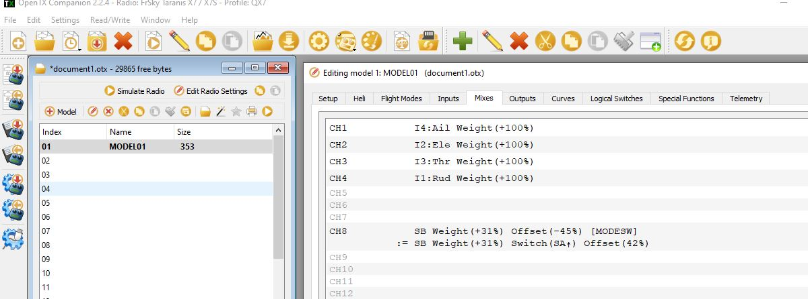

遥控器飞行模式设置¶
本文展示了如何通过RC发射器设置多达6种自动驾驶控制/飞行模式。
飞行模式配置¶
开关位置和飞行模式之间的映射在Mission Planner飞行模式屏幕中设置。

Mission Planner:Flight Mode Screen (Copter).¶
您可以通过以下操作设置遥控器上可用的飞行模式：
打开遥控器
将Pixhawk（或其他自动驾驶仪）连接到Mission Planner
转到初始设置|必要硬件|飞行模式屏幕
注意
当你移动遥控器的飞行模式开关时，绿色高亮显示栏将移动到不同的位置。
使用每行上的下拉菜单为该开关位置选择飞行模式。
（Copter）确保至少有一个开关位置留给STABILISE。
（Copter）选中该开关位置的 简单模式 复选框（可选）。您可以选择设置Super Simple mode 超级简单模式 。如果同时选中“简单模式”和“超级简单模式”复选框，则将使用“超级简单”。
完成后，按下保存模式按钮。
（Copter）一些模式也可以从auxiliary switches辅助开关（也称为ch7、ch8选项开关）调用。例如，为RTL设置一个专用开关。
设置飞行模式通道¶
飞行模式信道是ArduPilot监控模式变化的输入无线电信道。
在Copter上，可以使用FLTMODE_CH参数进行配置。
遥控器配置¶
遥控器必须发出正确范围内的PWM信号，以便我们将模式映射到开关位置。
注意
可选择模式的正确PWM范围显示在Mission Planner飞行模式屏幕中的每个模式选择下拉列表旁边（请参阅上面的屏幕截图）。
如果您只想支持三种模式（使用三位开关），那么您可以将变送器配置为针对各个开关位置产生1165、1425和1815 us的PWM脉冲宽度。
如果您想支持6种模式，则变送器需要发射约1165、1295、1425、1555、1685和1815 us的PWM宽度。通常，这是通过将变送器配置为混合两位开关和三位开关来实现的（总共提供6种模式）。如果有模拟表盘，你也可以使用模拟表盘，但很难可靠地将表盘调到六种不同设置的正确位置。
以下各节提供的链接显示了如何配置不同制造商的变送器，以及如何测试（在任务规划器中）每个开关设置是否发出适当的PWM信号。
测试遥控器开关设置¶
您可以使用Mission Planner 校准屏幕来测试每个模式设置的PWM脉冲宽度。
只需切换遥控器上的模式，并确认所选通道的PWM与所需的PWM值相匹配。下面的屏幕截图假设飞行模式频道设置为Radio 5。

特定RC硬件的教程¶
以下是一些用户提供的教程，用于在各种RC系统中实现这一点（或通过两个位置的切换为RC单元添加更多模式）：
任何基于OpenTX的遥控器：
只需选择两个开关（其中一个必须是三位），并将这些混音添加到车辆使用的适当飞行模式频道上。下面的示例显示了一架飞机的情况，该飞机使用Channel 8作为飞行模式（默认），并使用开关SB在SA开关向上的情况下选择三种飞行模式，并在SA不处于向上位置时通过SB选择另外三种飞行模式。
{kind=link}
Turnigy 9x(or an even easier way) (Here!) - Turnigy 9x with ER9x firmware
Spektrum DX8 (alternate method below)
Spektrum DX8 (替代方法)¶
本节介绍了使用Spektrum DX8设置6种模式的替代方法。此方法使用档位开关和飞行模式开关。所有其他开关都可以根据需要进行分配。该方法还允许将每个模式设置在每个模式的脉冲宽度范围的中间，因此微小的变化不会改变模式。使用Mission Planner飞行模式设置来监控这些调整的当前PWM。
设置开关（6种模式需要）
按住滚动条，打开DX8，向下滚动到切换选择，单击滚动条。按如下方式设置开关：
档位=档位（通道5）
FMode=Inh未分配给通道-用于与6种模式的档位开关（通道5）混合
其他你想要的。一种方法如下：
旋钮至aux1=用于摄像机倾斜/调谐的通道6
Mix=aux2=通道7，以保存APM配置中的航路点或RTL、自动配平或其他设置。
翻板至aux3=通道8用于其他用途
单击BACK（返回），直到出现正常屏幕，或者关闭电源，然后重新打开电源。
设置通道5的非混合伺服设置（由档位开关控制的档位通道）
这将是没有混合的值-F模式开关处于0位置，并将最低脉冲宽度设置为1165 us（模式1），将最高脉冲宽度设置至1815 us（方式6）
Click the roller bar, scroll down to Servo Setup, Select the Gear channel, Select Sub Trim.
Set sub trim to 0
Select Travel.
Set travel (left, position 0) for 1165 us pulse (~90%).
Set travel (right, position 1 for 1815 us pulse (~74%).
Set up Mix 1 to change the Gear Pulse width when F Mode is in position 1
Click roller, scroll down to Mixing, click roller, scroll to first line under Mix (has xxx > xxx, AIL > RUD, or some other mix set),click roller, Select Mix 1, Click roller.
Set Mix: Gear > Gear. Gear changes Gear depending on Switch F Mode setting
Set Offset = 0, Trim = Inh.
Set SW = FM 1
Set the F Mode switch on the transmitter to position 1.
Set the Gear switch on the transmitter to position 0.
Set top Rate for pulse width of 1290 us for mode 2 (~-35%)
(change = 400 us * -90% * -35% = 126 us. Result = 1165 us + 126 us = 1251 us = mode 2)
Set the Gear switch on the transmitter to position 1.
Set bottom Rate for pulse width of 1685 us for mode 5 (~– 45%)
(change = 400 us * +73% *- 45% = -131 us. Result = 1815 us - 131 us = 1684 us = mode 5)
Set up a mix 2 to change the Gear Pulse width when F Mode is in position 2
Mix: Gear > Gear. Gear changes Gear depending on Switch F Mode setting.
Set Offset = 0, Trim = Inh
Set SW = FM2
Set the F Mode switch on the transmitter to position 2
Set the Gear switch on the transmitter to position 0.
Rate top Rate for pulse width of 1425 us for mode 3 (~–72%) (change = 400 us * –90% * – 72% = 259 us. Result = 1165 us + 259 us = 1424 us = mode 3)
Set the Gear switch on the transmitter to position 1.
Set bottom Rate for pulse width of 1550 us for mode 4 (~–89%) (change = 400 us * +73% * – 89% = -262 us. Result = 1815 us - 262 us = 1553 us = mode 4)